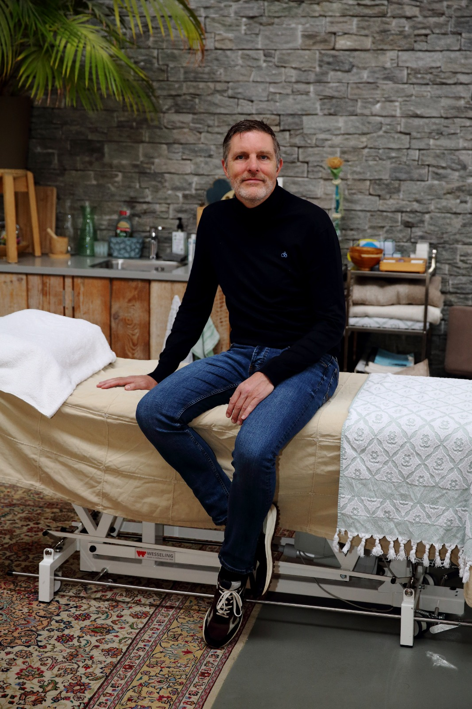

Mayk Egbers is osteopaat D.O.-MRO en behandelt volwassenen, kinderen en baby's. Alleen met zijn handen, op drie plekken in Oost-Nederland.

Een osteopaat kijkt breed naar de individuele mens. Niet de klacht staat centraal, maar de vraag waardoor het in die regio tot klachten is gekomen. Bewegingsverliezen in het hele lijf worden behandeld om herstel op gang te brengen.
Dat gaat verder dan armen, benen, wervelkolom en bekken. Ook de bewegelijkheid van de schedel en het orgaansysteem worden meegenomen, met zachte rek en ontspanningstechnieken en waar nodig gerichte manipulaties en mobilisaties.
De leeftijd van patiënten varieert van enkele dagen tot ver over de 90 jaar.
Er wordt geen apparatuur gebruikt en er worden geen medicijnen voorgeschreven. Dat is het domein van de arts, naar wie zo nodig wordt doorverwezen of met wie wordt overlegd.
Afspraken maakt u per locatie.
Voortsweg 204
7523 CK Enschede
Osteopathie Deventer, waar Mayk sinds 2005 werkt.
Sinds 2010, samen met osteopaat Geert Achterkamp D.O.-MRO.
Mayk begon als fysiotherapeut en schreef zijn afstudeerthesis over het effect van een Jones-techniek op oorpijn. In 2004 behaalde hij zijn diploma osteopathie.
Bel of mail, dan kijken we samen naar de dichtstbijzijnde locatie.